Visualize differential expression (DE) results — typically the output of
Seurat::FindMarkers() or
Seurat::FindAllMarkers() — across a
variety of plot types. You can also compose the DE results from other
tools into a data frame with the required columns and use this function to visualize them.
MarkersPlot() bridges the gap between DE
testing and visualization by providing a unified interface for both
summary-level DE visualizations (volcano, jitter, heatmap, and dot
plots of fold changes and significance) and expression-level
visualizations (violin, box, bar, ridge, heatmap, and dot plots of actual
expression values from a Seurat object).
The function handles two broad categories of plots:
DE summary plots (no
objectrequired): visualize the DE statistics themselves — log2 fold change, percentage difference, p-values, and adjusted p-values — across groups or comparisons."volcano"/"volcano_log2fc"— Volcano plot with log2 fold change on the x-axis and \(-log_{10}(p)\) on the y-axis. Genes passing thecutoffare highlighted and top genes are labeled. Ideal for overview of effect size vs. significance."volcano_pct"— Volcano plot with percentage-point difference (pct.1 - pct.2) on the x-axis. Useful when the biological question is about detection rate rather than expression magnitude."jitter"/"jitter_log2fc"— Jitter plot of log2 fold changes across groups (defined byeach). Dot size encodes \(-log_{10}(p)\). Reveals distribution of effect sizes per cluster or condition."jitter_pct"— Jitter plot of percentage-point differences across groups."heatmap_log2fc"— Heatmap of log2 fold changes (genes × groups). Cells can be marked for significance viacutoffandsig_mark."heatmap_pct"— Heatmap of percentage-point differences (genes × groups). Same significance-marking support."dot_log2fc"— Dot plot of log2 fold changes (genes × groups). Dot size encodes \(-log_{10}(p)\)."dot_pct"— Dot plot of percentage-point differences (genes × groups). Dot size encodes \(-log_{10}(p)\).
Expression plots (
objectrequired): visualize the actual expression values of the selected marker genes in the context of the original Seurat object. These are useful for validating DE results by inspecting the underlying expression distributions."heatmap"— Expression heatmap of selected marker genes."violin"— Violin plots of expression per gene."box"— Box plots of expression per gene."bar"— Bar plots of mean expression per gene."ridge"— Ridge plots of expression distribution per gene."dot"— Dot plot of expression (fraction expressing × mean expression) per gene.
Usage
MarkersPlot(
markers,
object = NULL,
plot_type = c("volcano", "volcano_log2fc", "volcano_pct", "jitter", "jitter_log2fc",
"jitter_pct", "heatmap_log2fc", "heatmap_pct", "dot_log2fc", "dot_pct", "heatmap",
"violin", "box", "bar", "ridge", "dot"),
group_by = NULL,
each = NULL,
facet_each = FALSE,
p_adjust = TRUE,
cutoff = NULL,
show_labels = FALSE,
sig_mark = "*",
order_by = "desc(abs(avg_log2FC))",
select = ifelse(plot_type %in% c("volcano", "volcano_log2fc", "volcano_pct",
"jitter", "jitter_log2fc", "jitter_pct"), 5, ifelse(plot_type %in% c("heatmap",
"violin", "box", "bar", "ridge", "dot") && !is.null(each) && !grepl("^\\s*:",
each), 5, 10)),
flatten_markers = FALSE,
...
)Arguments
- markers
A data frame of differential expression results, typically the output of
Seurat::FindMarkers()orSeurat::FindAllMarkers(). Must contain columns"gene"(or gene symbols as rownames),"p_val", and"avg_log2FC". For percentage-based plots (volcano_pct,jitter_pct,heatmap_pct,dot_pct), columns"pct.1"and"pct.2"are also required.- object
A Seurat object. Required for expression-based plot types:
"heatmap","violin","box","bar","ridge", and"dot". Not used for DE summary plot types. Default:NULL.- plot_type
The type of plot to generate. One of
"volcano","volcano_log2fc","volcano_pct","jitter","jitter_log2fc","jitter_pct","heatmap_log2fc","heatmap_pct","dot_log2fc","dot_pct","heatmap","violin","box","bar","ridge", or"dot". See Description for details on each type.- group_by
Used only for expression-based plot types (ignored for DE summary plot types). A column in the Seurat object's metadata to group cells by, e.g., a condition column — useful when the DEs were calculated between conditions (such as cell cycle phases) and you want to compare the expression of the markers across those conditions. A single value is passed directly to
FeatureStatPlot: forheatmapanddotplots it is applied as the column annotation (ident), and it only takes effect wheneachincludes a metadata column mapping; forviolin,box,bar, andridgeplots it is passed asgroup_by. The"marker_column:metadata_column"syntax (see Metadata column mapping) restricts the object to only the cells involved in the comparisons: for example, if acomparisoncolumn in the markers data frame holds"G1:G2M", passinggroup_by = "comparison:Phase"keeps only G1 and G2M cells in the plot, with thePhasecolumn re-factored to these two levels in the order they first appear in thecomparisoncolumn. Without the restriction, e.g.,group_by = "Phase", all phase cells (G1, G2M, and S) are included in the plot. Default:NULL.- each
A column name in
markersindicating the grouping from which each marker was identified (e.g., theclustercolumn fromFindAllMarkers()). Required for jitter and DE heatmap/dot plot types, where it defines the x-axis or column groups. For volcano plot types, it splits the plot by group (or facets it, withfacet_each = TRUE). For expression plot types,eachis used to select the markers within each group; a plain column name does not split the plot — use the"marker_column:metadata_column"syntax (see Metadata column mapping) to also split the plot by the mapped metadata column. Alternatively, pass":metadata_column"with an empty marker part to split the expression plot by the metadata column directly, without selecting markers per group (markers are selected overall) and without merging metadata. Default:NULL.- facet_each
Logical. Only for volcano plot types: if
TRUE, facet the volcano plot by theeachgroups instead of splitting it into separate subplots. Ignored for other plot types. Default:FALSE.- p_adjust
Logical. If
TRUE(default), use adjusted p-value (p_val_adjcolumn) for significance calculations and y-axis transformations. IfFALSE, use raw p-value (p_valcolumn).- cutoff
Numeric. The p-value (or adjusted p-value, depending on
p_adjust) threshold for labeling significance. For volcano plots, setsy_cutoff. For DE heatmap plots (heatmap_log2fc,heatmap_pct), controls which cells receive significance marks. For expression plot types with a numericselect, only markers with a p-value belowcutoffare eligible for selection. Ignored by DE dot plots (dot_log2fc,dot_pct). Default:NULL(no cutoff; defaults to0.05for volcano plots).- show_labels
Logical. For
heatmap_log2fcandheatmap_pctplot types only. IfTRUE, display numeric values in heatmap cells. When combined withcutoff, both values and significance marks are shown. Default:FALSE.- sig_mark
Character. The symbol or compound mark used to annotate statistically significant cells in
heatmap_log2fcandheatmap_pctplots. Must be a valid ComplexHeatmap mark: single characters ("-","|","+","/","\\","x","o") or compound marks ("[*]","<*>","(*)","{*}"). Note that"*"conflicts withshow_labels = TRUEbecause both use the label layer — use a compound mark instead. Default:"*".- order_by
A string of one or more comma-separated expressions used to order the markers (evaluated with
dplyr::arrange()). Can reference columns inmarkersas well as metadata columns merged in via a colon-formeach(see Metadata column mapping). Only the first value of each merged metadata column is kept. Example:"desc(avg_log2FC)"or"desc(avg_log2FC), desc(pct.1)". The ordering determines which markers are selected whenselectis numeric. For jitter plots, it is also passed toplotthis::JitterPlot(). Default:"desc(abs(avg_log2FC))".- select
How to select markers for display or labeling. See Marker selection and filtering section for full details.
Numeric: Top N markers per
eachgroup, or overall wheneachisNULL(default:5for volcano/jitter types and for expression plot types wheneachselects markers per group,10otherwise).Single expression: Filter condition for
dplyr::filter().Character vector of multiple expressions (DE heatmap/dot plot types only): expressions mentioning the
eachcolumn name filter the overall data, others filter within the remaining data.
- flatten_markers
Logical. Only for the expression
heatmapanddotplot types. Wheneachis used to select markers per group, the markers are by default provided toFeatureStatPlotas a named list (one entry per group), which splits the feature rows of the plot by group. Withflatten_markers = TRUE, the selected markers are collapsed into a single vector so the plot shows one unsplit block of features — useful e.g. to mimicSeurat::DoHeatmap()on globally selected markers. Default:FALSE.- ...
Additional arguments passed to the underlying plotting function, depending on
plot_type:- For
volcano,volcano_log2fc,volcano_pct Passed to
plotthis::VolcanoPlot(). Common arguments:x_cutoff,x_cutoff_name,label_by,color_by,nlabel,flip_negative.- For
jitter,jitter_log2fc,jitter_pct Passed to
plotthis::JitterPlot(). Common arguments:add_hline,shape,size_by,nlabel.- For
heatmap_log2fc,heatmap_pct,dot_log2fc,dot_pct Passed to
plotthis::Heatmap(). Common arguments:show_row_names,show_column_names,values_fill,palette,cluster_rows,cluster_columns,add_reticle.- For
heatmap,violin,box,bar,ridge,dot Passed to
FeatureStatPlot. Common arguments:name,palette,ncol,nrow,stack,layer,cell_type. Note thatgroup_by,ident, andcolumns_split_byare set byMarkersPlot()from thegroup_byandeacharguments.
- For
Value
A ggplot object (from plotthis::VolcanoPlot()
or plotthis::JitterPlot()), a
Heatmap object (from plotthis::Heatmap()),
or a ggplot/patchwork object (from FeatureStatPlot). When
split_by or faceting generates multiple plots and
combine = TRUE (default), a combined patchwork object is
returned; when combine = FALSE, a list of individual plots is
returned.
Note
plot_typedetermines which underlying plotting function is called and also what to be plotted.volcano,volcano_log2fc,volcano_pctjitter,jitter_log2fc,jitter_pct,heatmap_log2fc,heatmap_pct,dot_log2fc, anddot_pctare DE summary plots that visualize the DE statistics themselves, whileheatmap,violin,box,bar,ridge, anddotare expression-based plots that visualize the actual expression values of the selected marker genes in the context of the original Seurat object.eachis required for jitter plots ("jitter","jitter_log2fc","jitter_pct") and DE heatmap/dot plots ("heatmap_log2fc","heatmap_pct","dot_log2fc","dot_pct"). Its role depends on the plot type:Volcano plot types: the plot is split by the
eachgroups (faceted whenfacet_each = TRUE).Jitter plot types: the x-axis grouping.
DE heatmap/dot plot types: the columns of the heatmap/dot plot.
Expression plot types: used to select the markers within each group; it does not split or facet the plot. Pass
"marker_column:metadata_column"(e.g.,"cluster:seurat_clusters") to also split the plot by the mapped metadata column (viacolumns_split_byfor heatmap/dot, oridentfor violin/box/bar), or":metadata_column"(e.g.,":seurat_clusters") to split the plot by the metadata column without per-group marker selection.
When
eachuses the"marker_column:metadata_column"form with a non-empty marker column, the markers data frame is left-joined with the object metadata. Only the first row per group is kept for non-key columns, which is sufficient for most annotation purposes but can cause issues if per-cell metadata is needed. The":metadata_column"form (empty marker part) skips the join entirely.The function calculates \(-log_{10}(p)\) (or \(-log_{10}(p_{adj})\)) internally and stores it in a temporary
neg_log10_pcolumn. This column is available for use inorder_by.
Metadata column mapping
Both each and group_by accept a
"marker_column:metadata_column" syntax that links a column in the
markers data frame to a column in the Seurat object's metadata.
The part before the colon must be a column in
markers(e.g.,cluster) or be empty; the part after the colon must be a column inobject@meta.data(e.g.,seurat_clusters).This syntax requires
objectto be provided; otherwise an error is raised.When the marker part is non-empty, every value in the marker column must exist in the metadata column, otherwise an error is raised.
For
eachwith a non-empty marker part, the metadata is merged into the markers data frame (keeping the first row of each metadata group for non-key columns), so metadata columns become available for arguments likeorder_by. On name conflicts, the merged columns get a.metasuffix. With an empty marker part (":metadata_column"), no merging or per-group selection happens; the metadata column is used only to split/annotate the expression plot (columns_split_byfor heatmap/dot,identfor violin/box/bar).For
group_by, the object is subset to the cells whose metadata values occur in the marker column, and the metadata column is re-factored with those values in the order they first appear in the marker column. Values separated by a colon (e.g.,"G1:G2M") are split into individual groups.
Marker selection and filtering
How select picks the markers depends on the plot type and the
value provided:
Numeric — Select the top
Nmarkers (ordered byorder_by) within each group defined byeach, or overall wheneachisNULL. Jitter plots label the topNmarkers per group (a numericselectis required). Volcano plots ignoreselect— labeling is controlled via...(e.g.,nlabel). For expression plot types, a numericselectonly keeps markers with a p-value belowcutoff(when set) before the top-N selection.Single expression — A filter expression string evaluated by
dplyr::filter(). For example,"p_val_adj < 0.05 & avg_log2FC > 1". All markers matching the condition are retained across all groups.Multiple expressions (character vector) — Only for DE heatmap/dot plot types (
"heatmap_log2fc","heatmap_pct","dot_log2fc","dot_pct"). Each element is evaluated independently: expressions that mention theeachcolumn filter the overall data (removing groups); other expressions filter within the remaining data. For example,select = c("cluster %in% c('0', '1')", "p_val_adj < 0.05")first restricts to clusters 0 and 1, then keeps only significant markers. A numeric string like"5"among the expressions is treated as a top-N selection.
Default select: 5 for volcano and jitter plot types, and
for expression plot types when each is provided to select markers
per group (a plain marker column or a non-empty
"marker_column:metadata_column"); 10 otherwise (DE
heatmap/dot types and expression plots without per-group selection,
e.g., each = NULL or ":metadata_column").
Significance marking in heatmaps
For heatmap_log2fc and heatmap_pct, the cutoff and
sig_mark arguments control how statistically significant cells are
annotated in the heatmap:
When
cutoffis set andshow_labels = FALSE, cells with p-value (or adjusted p-value) below the cutoff are marked withsig_markusing ComplexHeatmap's mark system. Validsig_markvalues include"-","|","+","/","\\","x","o", and compound marks like"[*]","<*>","(*)","{*}".When
cutoffis set andshow_labels = TRUE, both numeric values and significance marks are displayed (cell_type = "label+mark"). Note thatsig_mark = "*"does not work withshow_labels = TRUE— use compound marks instead.When
cutoff = NULLandshow_labels = TRUE, all cells are labeled with their numeric values.
Examples
# \donttest{
data(pancreas_sub)
markers <- Seurat::FindMarkers(pancreas_sub,
group.by = "Phase", ident.1 = "G2M", ident.2 = "G1")
#> For a (much!) faster implementation of the Wilcoxon Rank Sum Test,
#> (default method for FindMarkers) please install the presto package
#> --------------------------------------------
#> install.packages('devtools')
#> devtools::install_github('immunogenomics/presto')
#> --------------------------------------------
#> After installation of presto, Seurat will automatically use the more
#> efficient implementation (no further action necessary).
#> This message will be shown once per session
allmarkers <- Seurat::FindAllMarkers(pancreas_sub) # seurat_clusters
#> Calculating cluster 0
#> Calculating cluster 1
#> Calculating cluster 2
#> Calculating cluster 3
#> Calculating cluster 4
#> Calculating cluster 5
#> Calculating cluster 6
MarkersPlot(markers)
#> Warning: no non-missing arguments to min; returning Inf
#> Warning: no non-missing arguments to max; returning -Inf
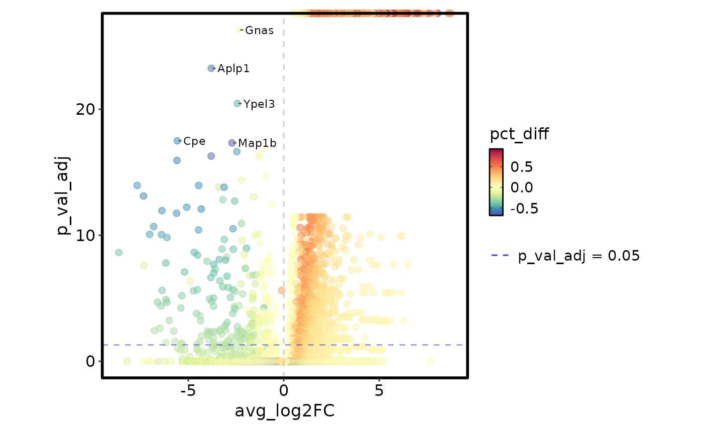
MarkersPlot(markers, x_cutoff = 2)
#> Warning: no non-missing arguments to min; returning Inf
#> Warning: no non-missing arguments to max; returning -Inf
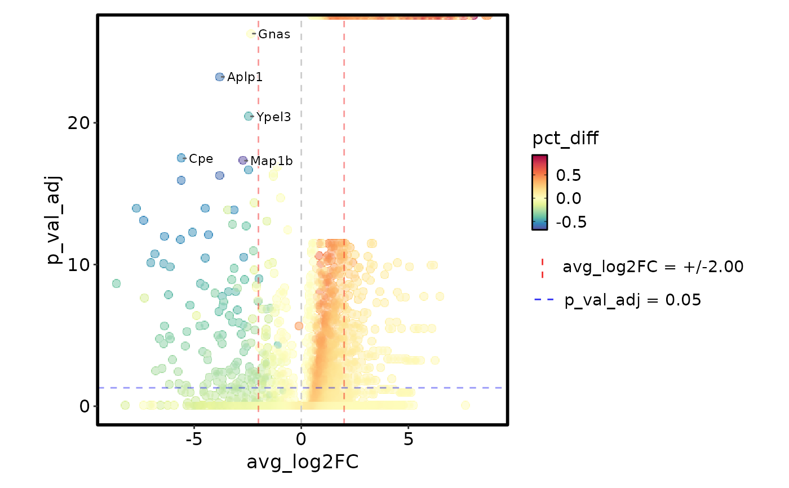
MarkersPlot(allmarkers, each = "cluster", ncol = 2, facet_each = TRUE)
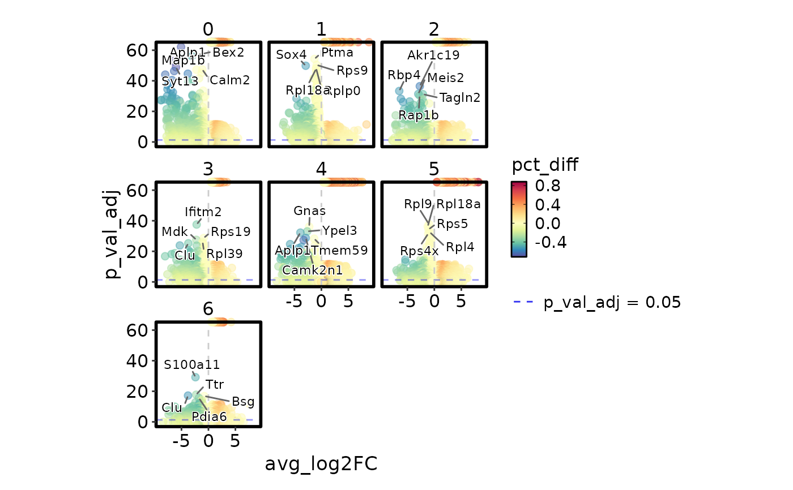
MarkersPlot(markers, plot_type = "volcano_pct", flip_negative = TRUE)
#> Warning: no non-missing arguments to min; returning Inf
#> Warning: no non-missing arguments to max; returning -Inf
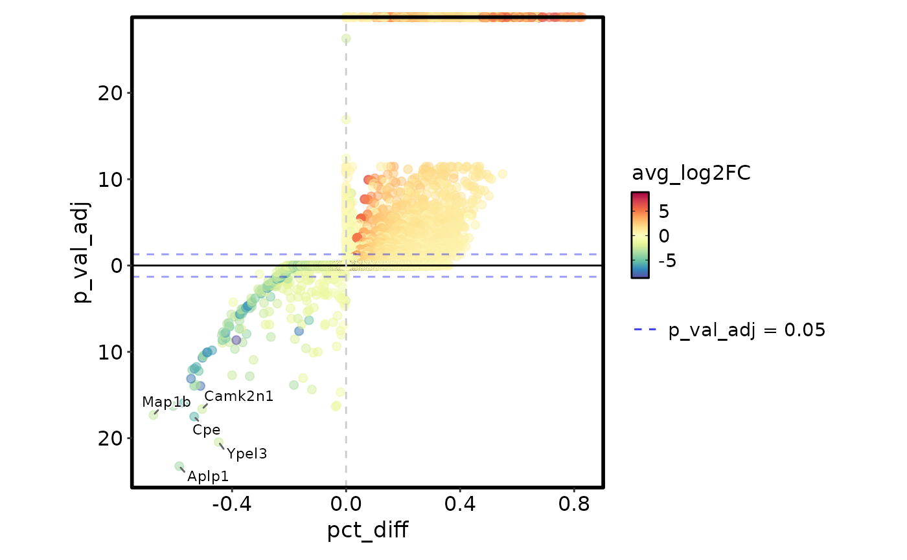
MarkersPlot(allmarkers, plot_type = "jitter", each = "cluster")
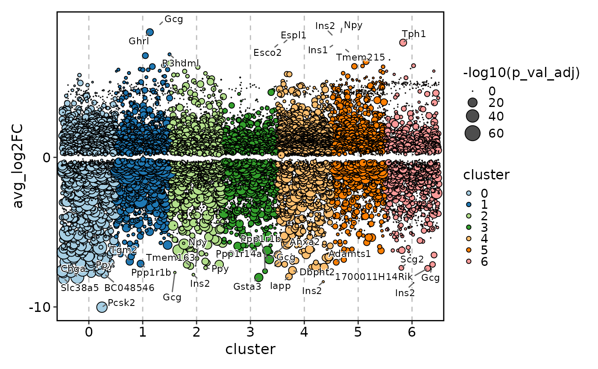
MarkersPlot(allmarkers, plot_type = "jitter_pct", order_by = "desc(abs(pct.1 - pct.2))",
each = "cluster", add_hline = 0, shape = 16)
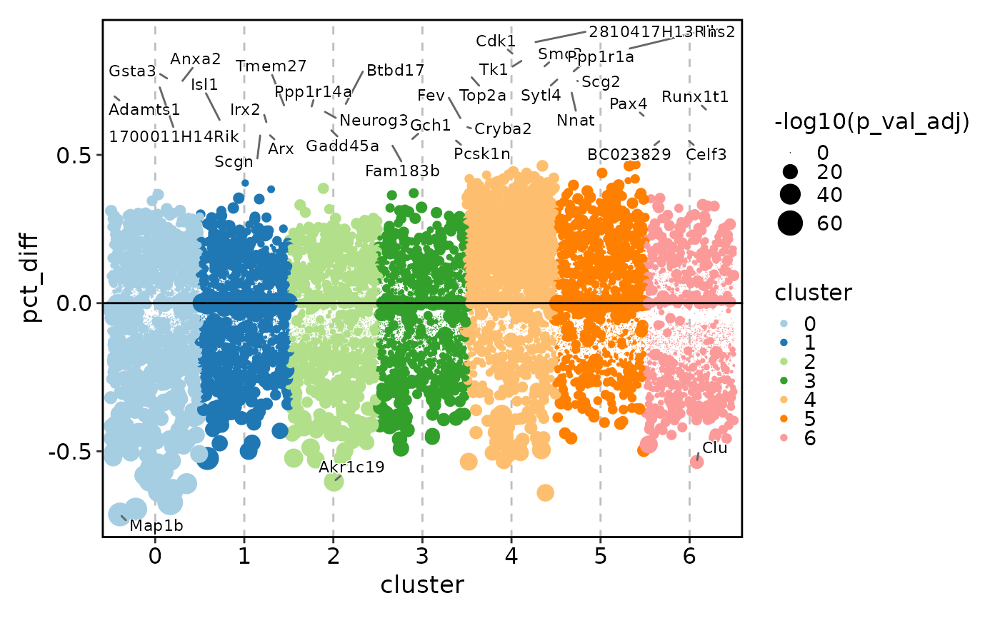
MarkersPlot(allmarkers, plot_type = "heatmap_log2fc", each = "cluster",
order_by = "desc(avg_log2FC)", select = 3)
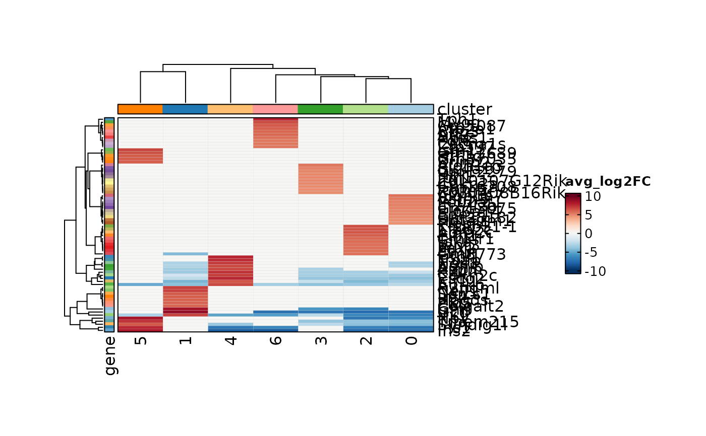
MarkersPlot(allmarkers, plot_type = "heatmap_log2fc", each = "cluster",
label = scales::label_number(accuracy = 0.01), select = 3,
cutoff = 0.05, show_labels = TRUE, sig_mark = '{}')
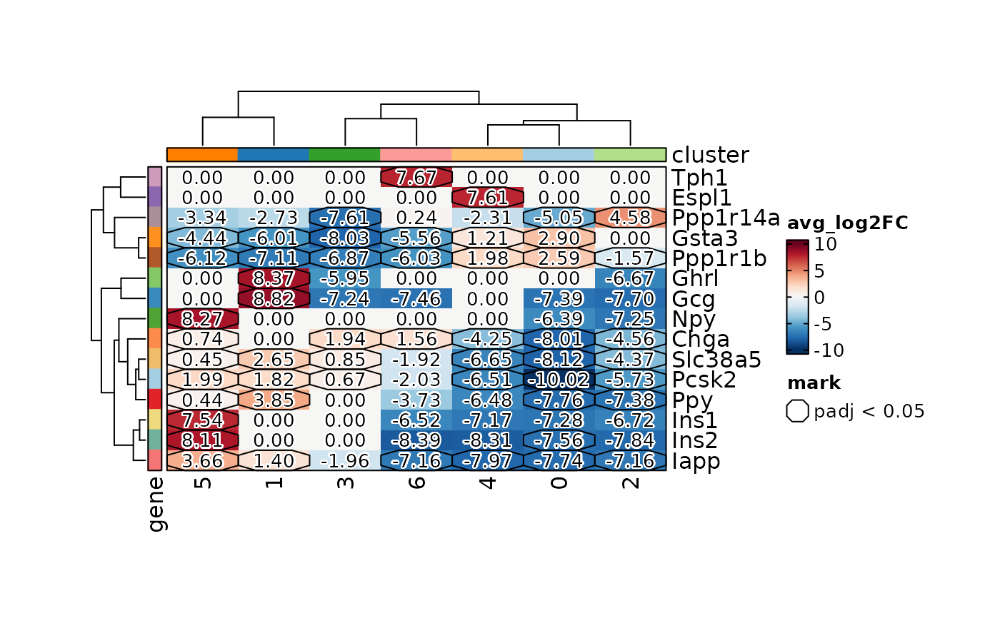
MarkersPlot(allmarkers, plot_type = "heatmap_pct", each = "cluster",
cutoff = 0.05, select = 3)
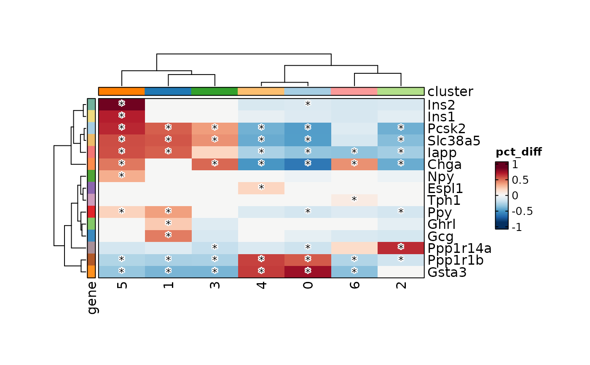
MarkersPlot(allmarkers, plot_type = "dot_log2fc", each = "cluster",
add_reticle = TRUE, select = 3)
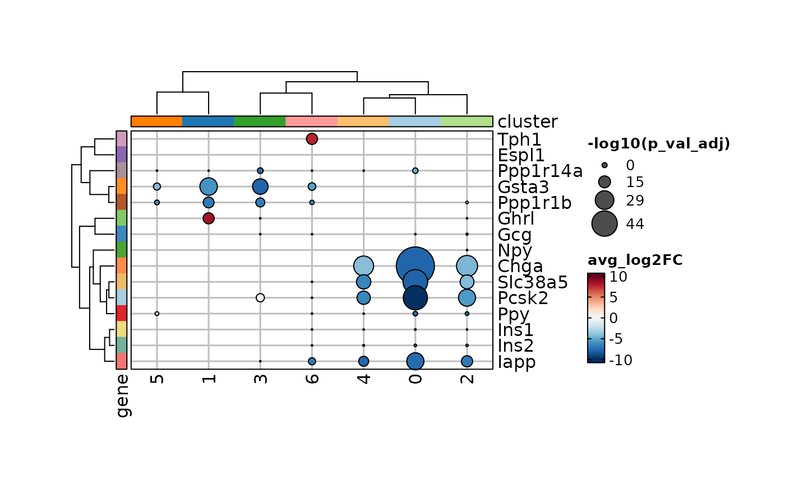
topmarkers <- allmarkers[order(allmarkers$avg_log2FC, decreasing = TRUE), ]
# Mimic Seurat's DoHeatmap()
MarkersPlot(topmarkers[1:20, ], object = pancreas_sub, plot_type = "heatmap",
layer = "data", cell_type = "bars", flatten_markers = TRUE, cluster_rows = FALSE,
show_column_names = "inplace", each = "cluster:seurat_clusters")
#> Warning: Layer counts isn't present in the assay object; returning NULL
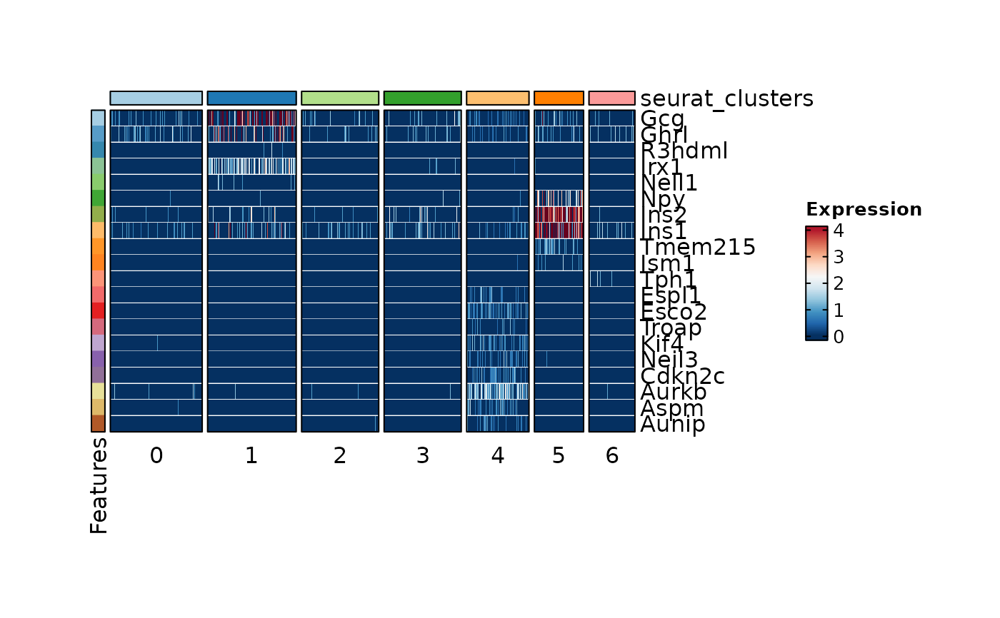
# Select top 3 markers per cluster
MarkersPlot(allmarkers, object = pancreas_sub, plot_type = "heatmap",
order_by = "desc(avg_log2FC)", select = 3,
layer = "data", cell_type = "bars",
show_column_names = "inplace", each = "cluster:seurat_clusters")
#> Warning: Layer counts isn't present in the assay object; returning NULL
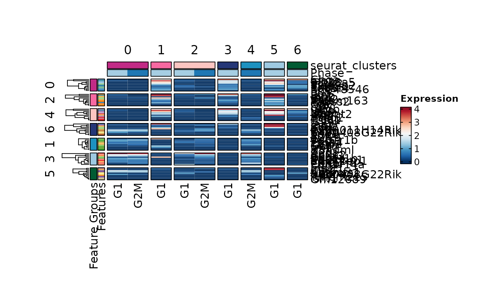
# Suppose we did a DE between G2M and G1 phases in each cluster and
# stored the results in a new column "comparison"
allmarkers$comparison <- "G1:G2M"
MarkersPlot(allmarkers, object = pancreas_sub, plot_type = "heatmap",
group_by = "comparison:Phase", each = "cluster:seurat_clusters",
order_by = "desc(avg_log2FC)", select = 3, layer = "data")
#> Warning: Layer counts isn't present in the assay object; returning NULL
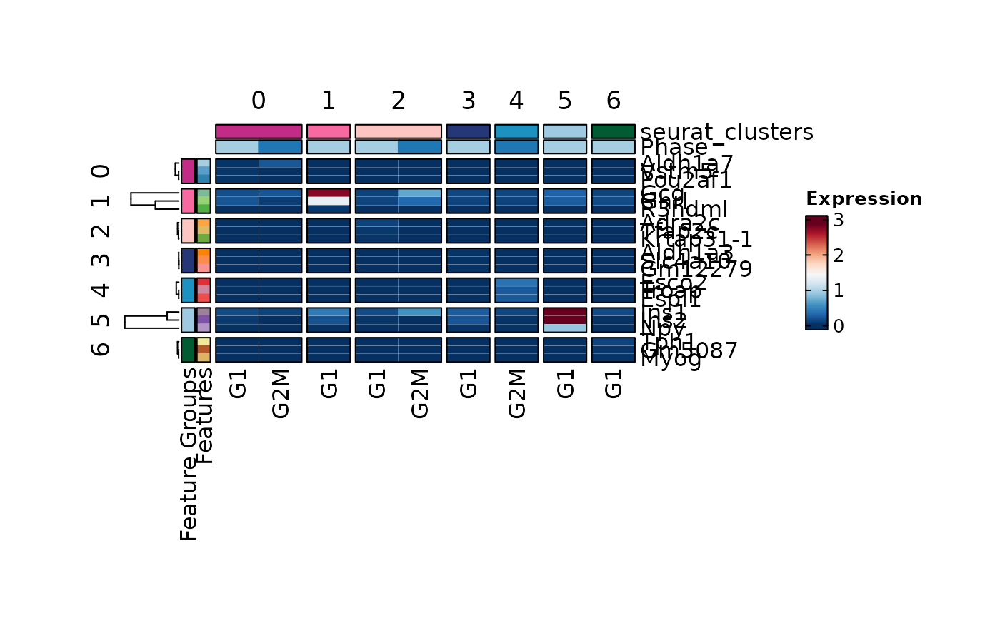
MarkersPlot(allmarkers, object = pancreas_sub, plot_type = "dot", select = 2,
flatten_markers = TRUE, order_by = "desc(avg_log2FC)",
group_by = "Phase", each = "cluster:seurat_clusters", layer = "data")
#> Warning: Layer counts isn't present in the assay object; returning NULL
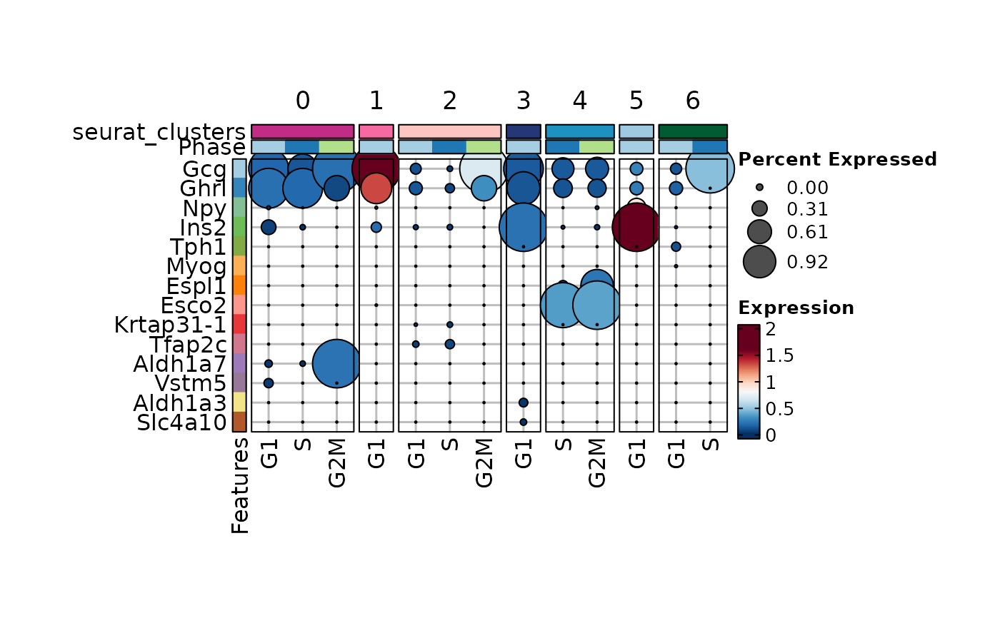
MarkersPlot(allmarkers, object = pancreas_sub, plot_type = "violin", select = 2,
position_dodge_preserve = "single", add_bg = TRUE, add_box = TRUE,
group_by = "comparison:Phase", each = "cluster:seurat_clusters", layer = "data")
#> Warning: Layer counts isn't present in the assay object; returning NULL
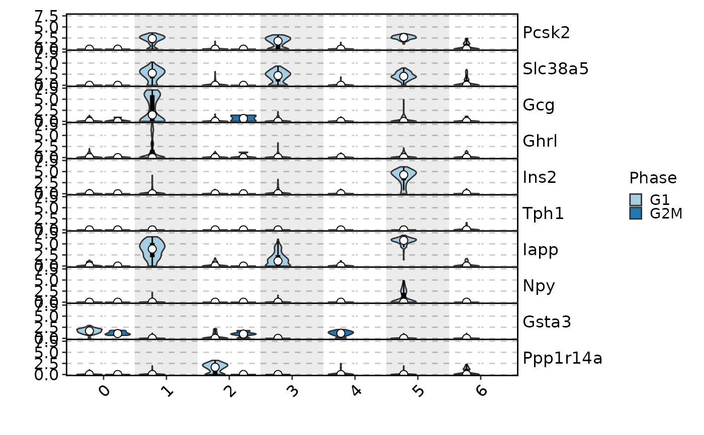
# select markers with a custom condition, e.g.,
# significant markers in cluster 0, 1, and 2 with pct.2 - pct.1 > 0.6
# Note that other clusters are still included in the plot
MarkersPlot(allmarkers, object = pancreas_sub, plot_type = "violin",
select = c('cluster %in% c("1", "2", "0") & pct.2 - pct.1 > 0.6'),
each = "cluster:seurat_clusters", cutoff = 0.05, layer = "data")
#> Warning: Layer counts isn't present in the assay object; returning NULL
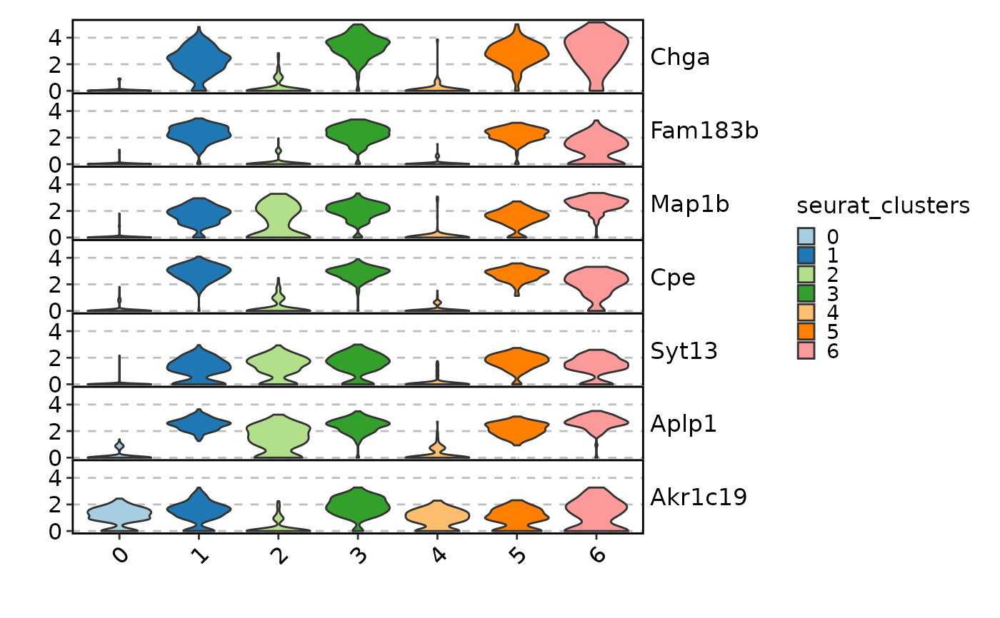
MarkersPlot(allmarkers, object = pancreas_sub, plot_type = "box", select = 3,
group_by = "Phase", each = "cluster:seurat_clusters", layer = "data")
#> Warning: Layer counts isn't present in the assay object; returning NULL
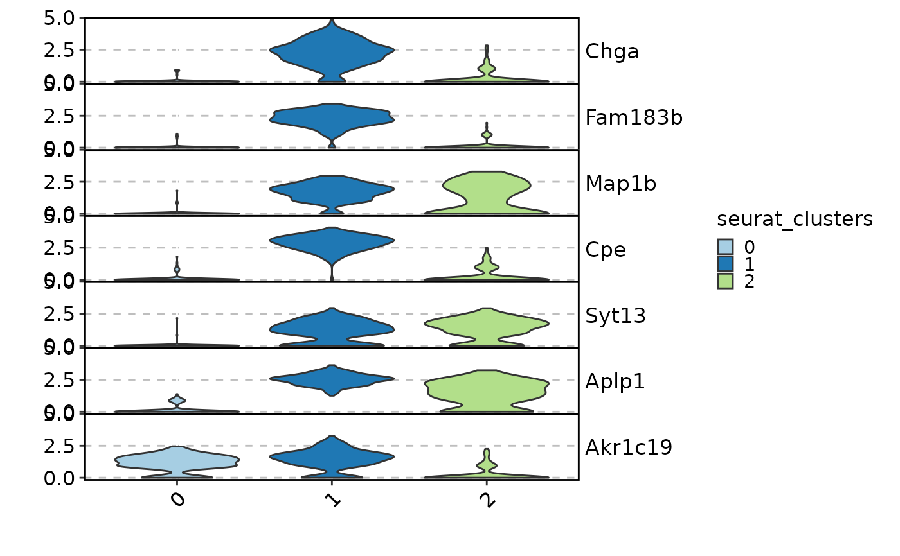
MarkersPlot(allmarkers, object = pancreas_sub, plot_type = "ridge", select = 2,
group_by = "Phase", each = "cluster:seurat_clusters", layer = "data",
ncol = 4)
#> Warning: Layer counts isn't present in the assay object; returning NULL
#> Picking joint bandwidth of 0.441
#> Picking joint bandwidth of 0.226
#> Picking joint bandwidth of 0.157
#> Picking joint bandwidth of 0.144
#> Picking joint bandwidth of 0.232
#> Picking joint bandwidth of 0.441
#> Picking joint bandwidth of 0.293
#> Picking joint bandwidth of 0.334
#> Picking joint bandwidth of 0.229
#> Picking joint bandwidth of 0.345
#> Picking joint bandwidth of 0.33
#> Picking joint bandwidth of 0.433
#> Picking joint bandwidth of 0.881
#> Picking joint bandwidth of 0.375
#> Picking joint bandwidth of 0.202
#> Picking joint bandwidth of 0.319
#> Picking joint bandwidth of 0.586
#> Picking joint bandwidth of 0.0593
#> Picking joint bandwidth of 0.0355
#> Picking joint bandwidth of 0.102
#> Picking joint bandwidth of 0.283
#> Picking joint bandwidth of 0.337
#> Picking joint bandwidth of 0.242
#> Picking joint bandwidth of 0.129
#> Picking joint bandwidth of 0.27
#> Picking joint bandwidth of 0.498
#> Picking joint bandwidth of 0.358
#> Picking joint bandwidth of 0.498
#> Picking joint bandwidth of 0.223
#> Picking joint bandwidth of 0.498
#> Picking joint bandwidth of 0.363
#> Picking joint bandwidth of 0.426
#> Picking joint bandwidth of 0.125
#> Picking joint bandwidth of 0.131
#> Picking joint bandwidth of 0.187
#> Picking joint bandwidth of 0.327
#> Picking joint bandwidth of 0.497
#> Picking joint bandwidth of 0.0635
#> Picking joint bandwidth of 0.327
#> Picking joint bandwidth of 0.327
#> Picking joint bandwidth of 0.0624
#> Picking joint bandwidth of 0.255
#> Picking joint bandwidth of 0.102
#> Picking joint bandwidth of 0.0994
#> Picking joint bandwidth of 0.0465
#> Picking joint bandwidth of 0.393
#> Picking joint bandwidth of 0.126
#> Picking joint bandwidth of 0.216
#> Picking joint bandwidth of 0.203
#> Picking joint bandwidth of 0.294
#> Picking joint bandwidth of 0.167
#> Picking joint bandwidth of 0.325
#> Picking joint bandwidth of 0.241
#> Picking joint bandwidth of 0.173
#> Picking joint bandwidth of 0.468
#> Picking joint bandwidth of 0.358
#> Picking joint bandwidth of 0.203
#> Picking joint bandwidth of 0.499
#> Picking joint bandwidth of 0.0658
#> Picking joint bandwidth of 0.0904
#> Picking joint bandwidth of 0.525
#> Picking joint bandwidth of 0.16
#> Picking joint bandwidth of 0.195
#> Picking joint bandwidth of 0.465
#> Picking joint bandwidth of 0.413
#> Picking joint bandwidth of 0.457
#> Picking joint bandwidth of 0.481
#> Picking joint bandwidth of 0.574
#> Picking joint bandwidth of 0.413
#> Picking joint bandwidth of 0.206
#> Picking joint bandwidth of 0.441
#> Picking joint bandwidth of 0.226
#> Picking joint bandwidth of 0.157
#> Picking joint bandwidth of 0.144
#> Picking joint bandwidth of 0.232
#> Picking joint bandwidth of 0.441
#> Picking joint bandwidth of 0.293
#> Picking joint bandwidth of 0.334
#> Picking joint bandwidth of 0.229
#> Picking joint bandwidth of 0.345
#> Picking joint bandwidth of 0.33
#> Picking joint bandwidth of 0.433
#> Picking joint bandwidth of 0.881
#> Picking joint bandwidth of 0.375
#> Picking joint bandwidth of 0.202
#> Picking joint bandwidth of 0.319
#> Picking joint bandwidth of 0.586
#> Picking joint bandwidth of 0.0593
#> Picking joint bandwidth of 0.0355
#> Picking joint bandwidth of 0.102
#> Picking joint bandwidth of 0.283
#> Picking joint bandwidth of 0.337
#> Picking joint bandwidth of 0.242
#> Picking joint bandwidth of 0.129
#> Picking joint bandwidth of 0.27
#> Picking joint bandwidth of 0.498
#> Picking joint bandwidth of 0.358
#> Picking joint bandwidth of 0.498
#> Picking joint bandwidth of 0.223
#> Picking joint bandwidth of 0.498
#> Picking joint bandwidth of 0.363
#> Picking joint bandwidth of 0.426
#> Picking joint bandwidth of 0.125
#> Picking joint bandwidth of 0.131
#> Picking joint bandwidth of 0.187
#> Picking joint bandwidth of 0.327
#> Picking joint bandwidth of 0.497
#> Picking joint bandwidth of 0.0635
#> Picking joint bandwidth of 0.327
#> Picking joint bandwidth of 0.327
#> Picking joint bandwidth of 0.0624
#> Picking joint bandwidth of 0.255
#> Picking joint bandwidth of 0.102
#> Picking joint bandwidth of 0.0994
#> Picking joint bandwidth of 0.0465
#> Picking joint bandwidth of 0.393
#> Picking joint bandwidth of 0.126
#> Picking joint bandwidth of 0.216
#> Picking joint bandwidth of 0.203
#> Picking joint bandwidth of 0.294
#> Picking joint bandwidth of 0.167
#> Picking joint bandwidth of 0.325
#> Picking joint bandwidth of 0.241
#> Picking joint bandwidth of 0.173
#> Picking joint bandwidth of 0.468
#> Picking joint bandwidth of 0.358
#> Picking joint bandwidth of 0.203
#> Picking joint bandwidth of 0.499
#> Picking joint bandwidth of 0.0658
#> Picking joint bandwidth of 0.0904
#> Picking joint bandwidth of 0.525
#> Picking joint bandwidth of 0.16
#> Picking joint bandwidth of 0.195
#> Picking joint bandwidth of 0.465
#> Picking joint bandwidth of 0.413
#> Picking joint bandwidth of 0.457
#> Picking joint bandwidth of 0.481
#> Picking joint bandwidth of 0.574
#> Picking joint bandwidth of 0.413
#> Picking joint bandwidth of 0.206
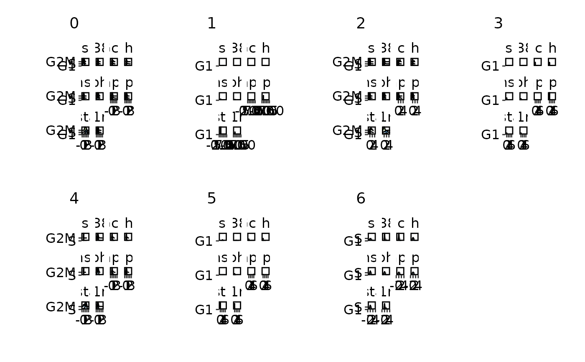
# }